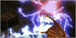

LEVEL CHALLENGE 2
Looking for a challenge in Terror difficulty? The Level Challenge 2 rewards you for beating a specific uberquest at a low character level.
Killing a Boss
This challenge requires you to 'kill' a boss. This means that you need to be
physically present at the battle and near the boss when it dies before
you can use the cube recipe that grants you the reward.
If you succeed in killing the target monster, you get a whirling red overlay that looks like three rotating bolts:

You now have 30 seconds to perform the cube recipe. If you are too slow and the red overlay vanishes, you have to do it again!
Warning: This does not work if the monster is killed by reflected damage, due to a Diablo II engine limitation. Please use different means of killing the target.
You need your Class Charm
This challenge requires you to have your Class Charm. This is a charm that
drops in the Kurast 3000 BA uberlevel. If you did the Ennead Challenge, you already
have one.
If not, see THIS PAGE for more information about Kurast 3000 BA.
There are 7 class charms, one for each character class.
HOW TO DO THE LEVEL CHALLENGE 2
MAXIMUM LEVEL 90
Do the Binding of Baal uberquest on Terror difficulty and defeat Tal Rasha.
This will trigger the whirly effect. Cube your Class Charm with a perfect gem to receive additional bonuses if your characterlevel is low enough.
You have 30 seconds to cube the Class Charm after killing Tal Rasha, so keep your cube empty!
See THIS PAGE for more information about Binding of Baal.
NOTE: Summon on open space.

Requires: level 90 or below
This upgrade recipe adds the following bonuses:
 | Amazon: Increase Maximum Life 5% Replenish Life +25 |
 | Assassin: Curse Length Reduced by 25% 5% Chance to Avoid Damage |
 | Barbarian: 5% Bonus to Summoned Minion Life +1% to Defense per Socketed Rune |
 | Druid: Total Character Defense Plus 25% All Resists +5% |
 | Necromancer: +1 Extra Totems 10% Bonus to Summoned Minion Damage |
 | Paladin: Damage Reduced by 5% Total Character Defense Plus 10% |
 | Sorceress: +15% Bonus to Energy Factor +5% to Spell Damage |
Btw. You gain no experience on Terror difficulty from Binding of Baal itself. Keep trying until you succeed!